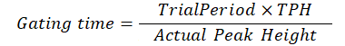

IonGate
Description
This process operates the ion gate state and outputs the signal via channels of DO and AO that are defined by processes of UpdDO and UpdAO.
It includes an auto-gain control function once the parameter of EnableAGC sets to TRUE.
Syntax
IonGate( TrialTime, TPH, EnableAGC )
Time in second for opening the ion gate for ion quantitation estimation.
The target peak height, as total ion number you expect, is used to ion auto gain control.
The gating time is calculated as

The function of ion auto gain control.
If the value sets False, the gating time is same as TrialTime.